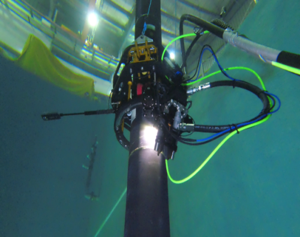
SONOMATIC
Products, robots & inspection services
Installation: From topside process equipment to subsea infrastructure.
Representative branch photo / illustration: Roto Climber Assessor (Mini). Manufacturer image from Sonomatic’s official website.Official product / service source ↗ · Image document ↗
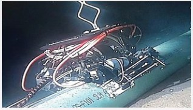
Subsea Inspection
Inspection services for submerged pipelines and structures.
Installation: Subsea.
Representative branch photo / illustration: MAG-ST. Manufacturer photo / illustration from Sonomatic brochure, page 5.Official product / service source ↗ · Image document ↗
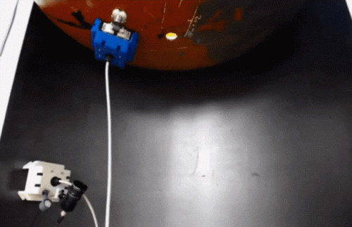
Specialist Inspection
Specialised NDT, robotic access and tank inspection.
Installation: Topside, tanks and selected subsea applications.
Representative branch photo / illustration: EDRIS. Manufacturer image from Sonomatic’s official website.Official product / service source ↗ · Image document ↗
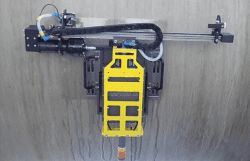
Robotic Inspection
Remote deployment of inspection tooling to difficult-access surfaces.
Installation: Topside, subsea and tank assets.
Representative branch photo / illustration: Raptor II. Manufacturer image from Sonomatic’s official website.Official product / service source ↗ · Image document ↗
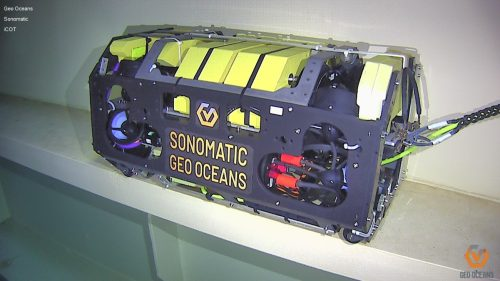
Tank Cleaning & Inspection
In-service and out-of-service tank inspection, annular-plate assessment and sludge removal.
Installation: Storage facilities and selected offshore tank applications.
Representative branch photo / illustration: i-COT. Manufacturer image from Sonomatic’s official website.Official product / service source ↗ · Image document ↗
i-COT
Remote tank-condition inspection with interchangeable NDT tooling. Joint Sonomatic / Geo Oceans platform.
Installation: FPSO cargo-oil tanks, water-ballast tanks and shared boundary plates.
Manufacturer image from Sonomatic’s official website.Official product / service source ↗ · Image document ↗
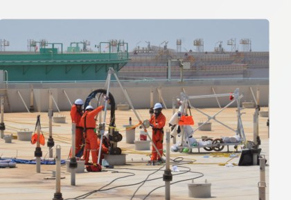
SONAR robotic range
Inspects tank-floor corrosion while the tank remains in service. Selects cleaning and inspection robots for the stored liquid.
Installation: Liquid-storage tank floors. Not a single robot model or an acoustic-sonar product.
Tank inspection deployment image from the SONAR range brochure, page 2; a range-level illustration.Official product / service source ↗ · Image document ↗
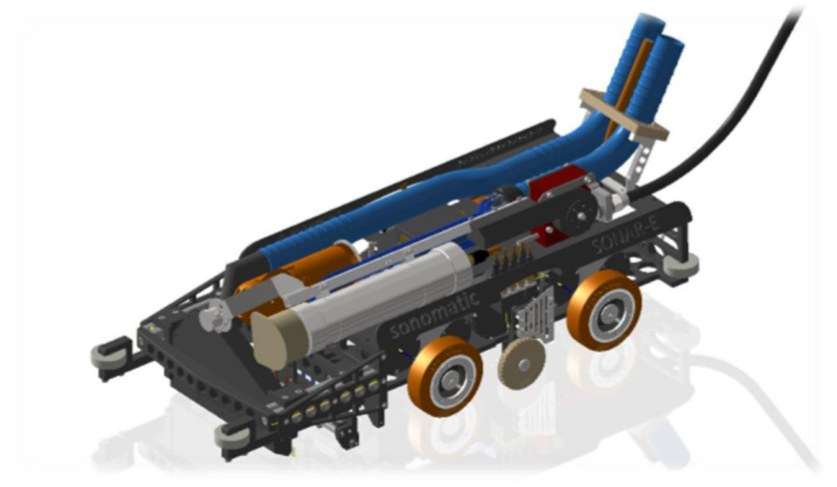
Tank Floor Scanner – Electric
Four-wheel-drive UT scanner maps tank floors. Includes probe-cleaning aids and navigation feedback.
Installation: Inside liquid-storage tanks, on the floor.
Manufacturer photo / illustration from Sonomatic brochure, page 1.Official product / service source ↗ · Image document ↗
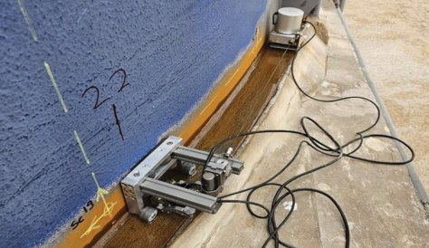
FranScan (AP)
Combines thickness measurement, short-range UT and phased array to assess annular-plate corrosion and the critical zone.
Installation: Tank perimeter, annular plate and shell-to-floor weld. Also supports some CUPS applications.
Manufacturer photo / illustration from Sonomatic brochure, page 2.Official product / service source ↗ · Image document ↗
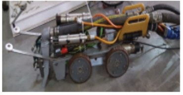
Historical tank fleet
Named models and configurations retained for completeness. Current availability is unconfirmed.
Installation: Storage-tank interiors and floors.
Representative branch photo / illustration: Hydraulic tank robots. Manufacturer photo / illustration from Sonomatic brochure, page 2.Official product / service source ↗ · Image document ↗

VR700MkV
Sludge-cleaning robot.
Installation: Tank interior and floor sludge.
Historical tank-robot fleet brochure excerpt, page 3. This is a shared fleet reference, not a verified photograph of this model.Official product / service source ↗ · Image document ↗
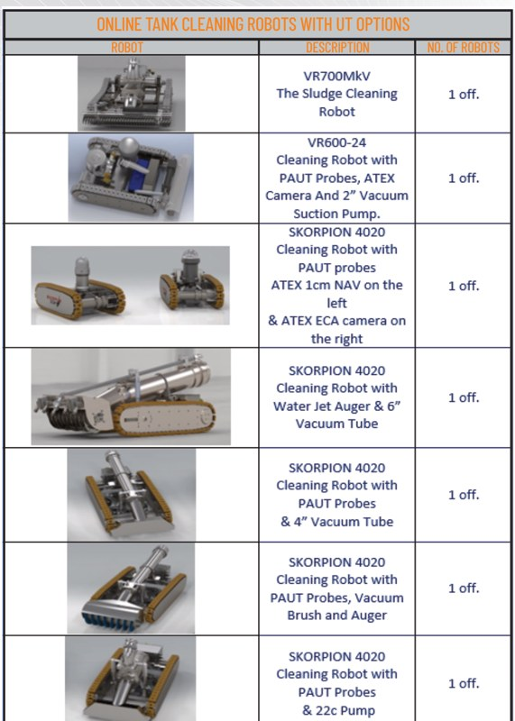
VR600-24
Cleaning robot with PAUT probes, ATEX camera and a 2 in vacuum-suction pump.
Installation: Tank interior / floor cleaning and inspection.
Historical tank-robot fleet brochure excerpt, page 3. This is a shared fleet reference, not a verified photograph of this model.Official product / service source ↗ · Image document ↗

SKORPION 4020
Options: PAUT + camera/navigation; jet auger + 6 in vacuum; PAUT + 4 in vacuum; PAUT + brush/auger; PAUT + 22c pump.
Installation: Tank-floor cleaning and UT inspection.
Historical tank-robot fleet brochure excerpt, page 3. This is a shared fleet reference, not a verified photograph of this model.Official product / service source ↗ · Image document ↗
Hydraulic tank robots
Inspects and removes sludge in crude / condensate.
Installation: Tank floors, 20 in manway.
Manufacturer photo / illustration from Sonomatic brochure, page 2.Official product / service source ↗ · Image document ↗
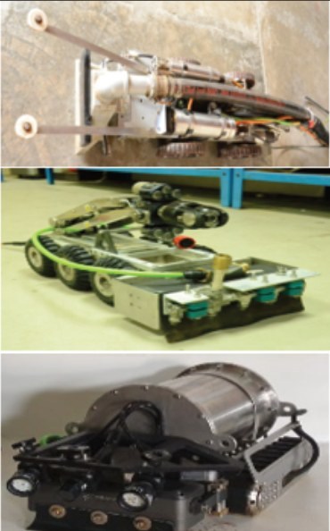
Electric tank robots
Video and UT inspection in water / Class II liquids.
Installation: Tank floors, 14, 20 or 22 in access.
Manufacturer photo / illustration from Sonomatic brochure, page 2.Official product / service source ↗ · Image document ↗
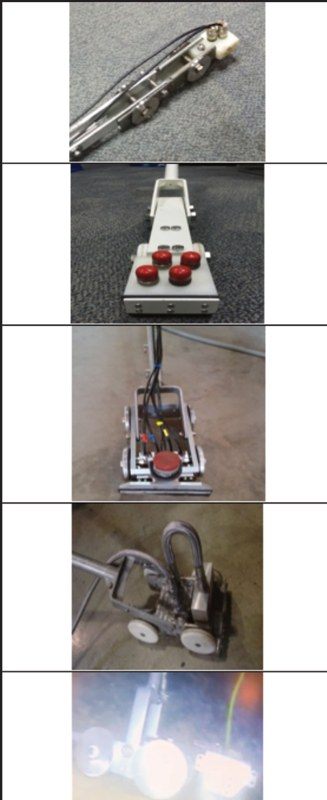
Manual tank tools
3.5, 6, 14 and 16 in access versions, plus 16 in PAUT.
Installation: Inside storage tanks.
Manufacturer photo / illustration from Sonomatic brochure, page 3.Official product / service source ↗ · Image document ↗
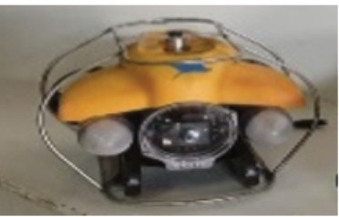
Video / UT swimming robots
Swimming visual / UT inspection.
Installation: Water-filled tank interiors.
Manufacturer photo / illustration from Sonomatic brochure, page 2.Official product / service source ↗ · Image document ↗
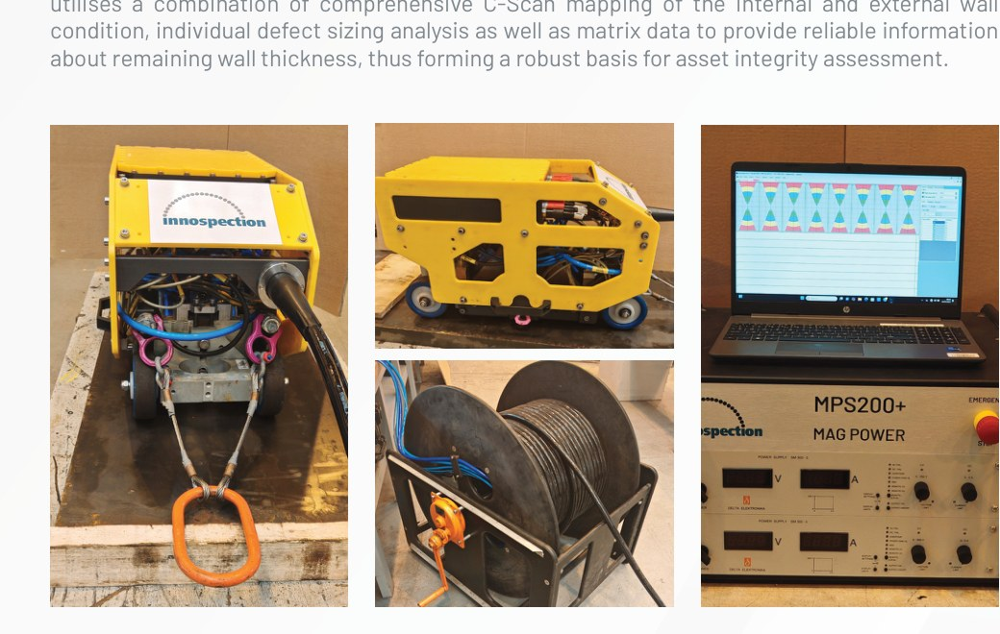
Integrity Services
Planning, analysis software and engineering assessment.
Installation: Across installation areas.
Inspection context image: MEC-MPS200+ MEC-MPS200. This branch covers software and/or integrity services. Manufacturer photo / illustration from Sonomatic brochure, page 2.Official product / service source ↗ · Image document ↗
Analysis Software
Software for inspection-data acquisition, mapping, comparison and reporting.
Installation: Cross-asset digital support.
Inspection context image: MEC-MPS200+ MEC-MPS200. This branch covers software and/or integrity services. Manufacturer photo / illustration from Sonomatic brochure, page 2.Official product / service source ↗ · Image document ↗
Software Builder
Builds component geometry for inspection-data representation.
Installation: Analyst workstation.
Inspection context image: MEC-MPS200+ MEC-MPS200. This branch covers software and/or integrity services. Manufacturer photo / illustration from Sonomatic brochure, page 2.Official product / service source ↗ · Image document ↗
Asset Integrity Management
Engineering services for inspection and asset-life decisions.
Installation: Across the installation.
Inspection context image: i-COT. This branch covers software and/or integrity services. Manufacturer image from Sonomatic’s official website.Official product / service source ↗ · Image document ↗
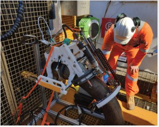
R&D Engineering
Inspection techniques, tooling development and custom systems.
Installation: Topside, splash zone and subsea.
Representative branch photo / illustration: Gooseneck Bend Scanner. Manufacturer photo / illustration from Sonomatic brochure, page 4.Official product / service source ↗ · Image document ↗
Subsea Tooling Developments
Scanners and crawlers for underwater inspection.
Installation: Subsea pipes and structures.
Representative branch photo / illustration: MAG-ST. Manufacturer photo / illustration from Sonomatic brochure, page 5.Official product / service source ↗ · Image document ↗
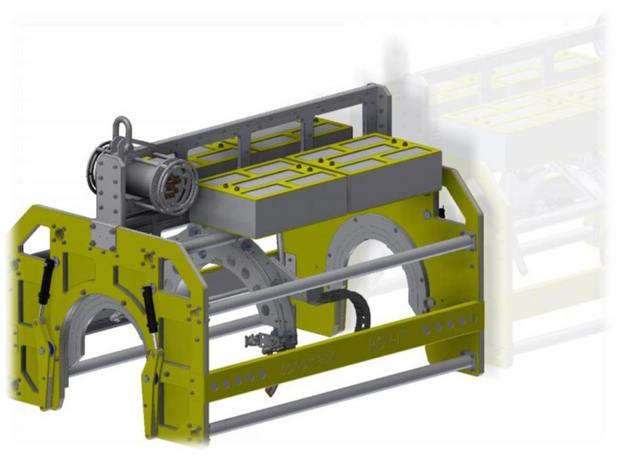
ROV-iT family
Explore rov-it family.
Installation: Subsea pipes and structures.
Representative branch photo / illustration: ROV-iT 18. Manufacturer photo / illustration from Sonomatic brochure, page 1.Official product / service source ↗ · Image document ↗
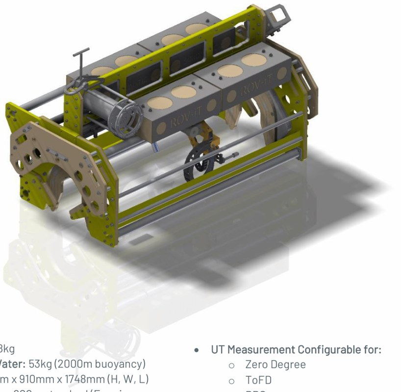
ROV-iT 12
Maps corrosion and inspects welds with configurable UT, TOFD, DRS or phased array.
Installation: Subsea pipework, nominal 6–12 in OD.
Manufacturer photo / illustration from Sonomatic brochure, page 1.Official product / service source ↗ · Image document ↗
ROV-iT 18
Performs automated circumferential and axial inspection using a hydraulic clamp frame.
Installation: Subsea pipelines and risers, 14–18 in OD.
Manufacturer photo / illustration from Sonomatic brochure, page 1.Official product / service source ↗ · Image document ↗
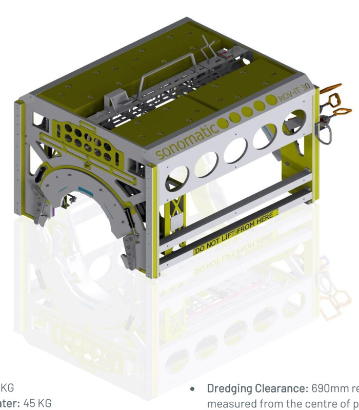
ROV-iT 30
Inspects larger pipes for wall loss and weld flaws. The ROV installs the hydraulic frame.
Installation: Subsea pipelines, 20–30 in OD.
Manufacturer photo / illustration from Sonomatic brochure, page 1.Official product / service source ↗ · Image document ↗
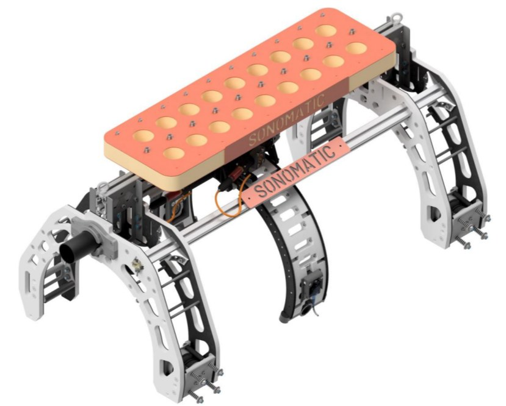
ROV-iT Mini Mini ROViT / Mini-ROVIT
Uses a lighter scanner for wall-thickness mapping and field-joint inspection. Cleaning is an option.
Installation: Subsea flowlines. Spec sheet: 6–18 in OD.
Manufacturer photo / illustration from Sonomatic brochure, page 1.Official product / service source ↗ · Image document ↗
Magnetic crawlers
Explore magnetic crawlers.
Installation: Subsea pipes and structures.
Representative branch photo / illustration: MAG-ST. Manufacturer photo / illustration from Sonomatic brochure, page 5.Official product / service source ↗ · Image document ↗
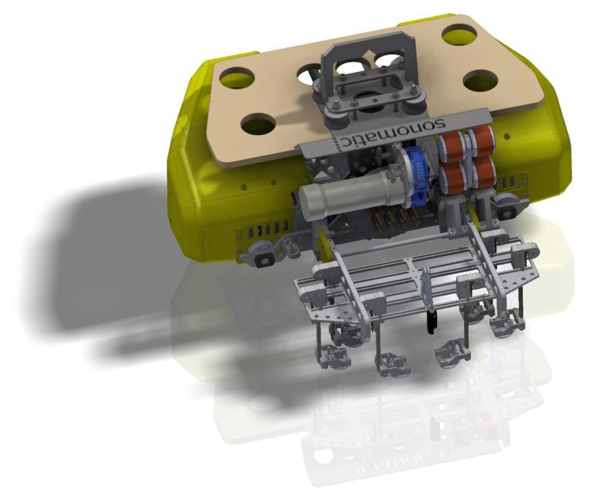
MAG-Rover
Steers over the asset for corrosion mapping and weld inspection. A project configuration combines cleaning with inspection.
Installation: Pipelines, caissons, conductors and subsea storage-tank walls.
Manufacturer photo / illustration from Sonomatic brochure, page 1.Official product / service source ↗ · Image document ↗
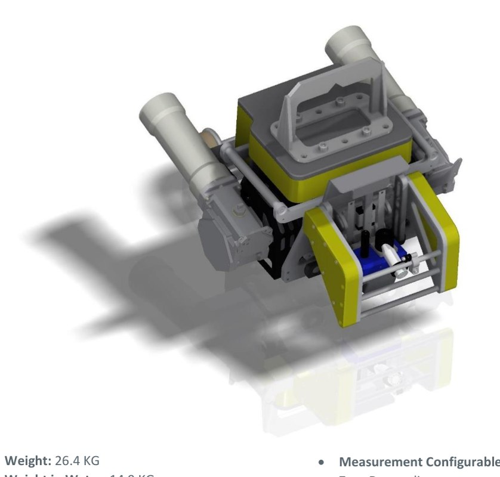
MAG-Crawler
Collects encoded UT line scans. Probe options include TOFD, DRS, phased array and ACFM.
Installation: Subsea steel pipework and structures, including restricted-access surfaces.
Manufacturer photo / illustration from Sonomatic brochure, page 1.Official product / service source ↗ · Image document ↗
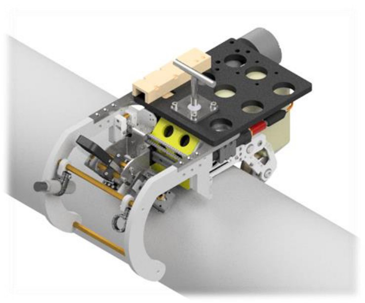
Mini-MAG
Uses a compact automated scan head for local corrosion and weld inspection.
Installation: Subsea pipes and steel surfaces where access is tight.
Manufacturer photo / illustration from Sonomatic brochure, page 1.Official product / service source ↗ · Image document ↗
MAG-ST
Rapidly screens pipe length using EMAT or Multiskip. Detailed follow-up quantifies suspect wall loss.
Installation: Unpiggable subsea pipelines. Topside use is also documented.
Manufacturer photo / illustration from Sonomatic brochure, page 5.Official product / service source ↗ · Image document ↗
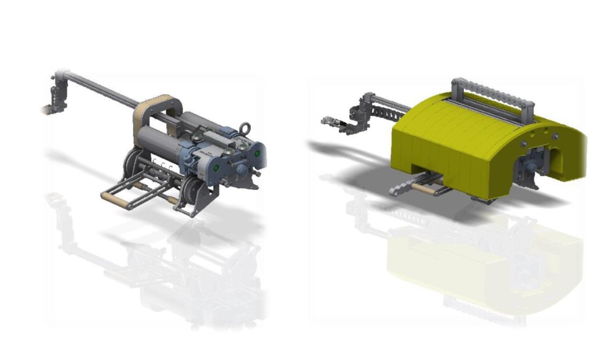
Nautilus family
Explore nautilus family.
Installation: Subsea pipes and structures.
Representative branch photo / illustration: MAG-Nautilus. Manufacturer photo / illustration from Sonomatic brochure, page 1.Official product / service source ↗ · Image document ↗
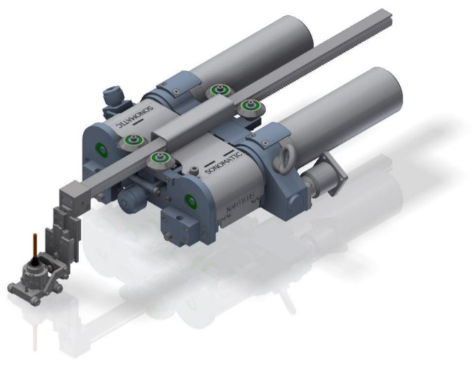
Nautilus
Scans pipe walls, welds and flanges using ring or flexible-track attachment. A lighter topside version is available.
Installation: Subsea pipework and complex geometry. Also topside piping.
Manufacturer photo / illustration from Sonomatic brochure, page 1.Official product / service source ↗ · Image document ↗
MAG-Nautilus
Automates corrosion and weld scans using magnetic wheels and a transverse scan arm. Diver or ROV deployment.
Installation: Large subsea steel pipes and flat or curved structures.
Manufacturer photo / illustration from Sonomatic brochure, page 1.Official product / service source ↗ · Image document ↗
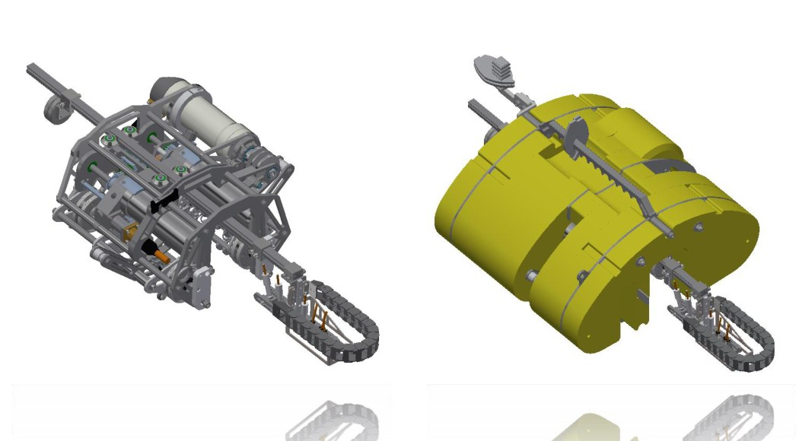
MAG-Nautilus II
Provides a revised magnetic scanner platform with automated UT, DRS or phased-array configurations.
Installation: Subsea steel surfaces. Diver or ROV deployment.
Manufacturer photo / illustration from Sonomatic brochure, page 1.Official product / service source ↗ · Image document ↗
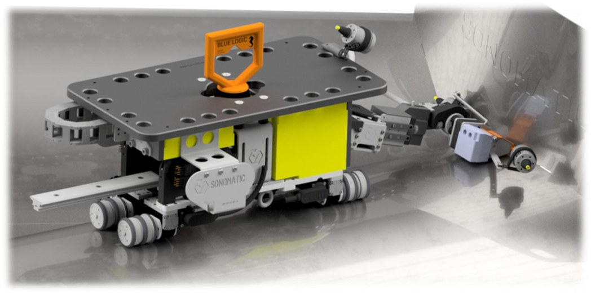
Complex-geometry scanners
Explore complex-geometry scanners.
Installation: Subsea pipes and structures.
Representative branch photo / illustration: NodeRay Scanner. Manufacturer photo / illustration from Sonomatic brochure, page 1.Official product / service source ↗ · Image document ↗
Gooseneck Bend Scanner
Maps corrosion around the full circumference and length of a bend using a bespoke frame and Nautilus axes.
Installation: Subsea gooseneck bends and elbows.
Manufacturer photo / illustration from Sonomatic brochure, page 4.Official product / service source ↗ · Image document ↗
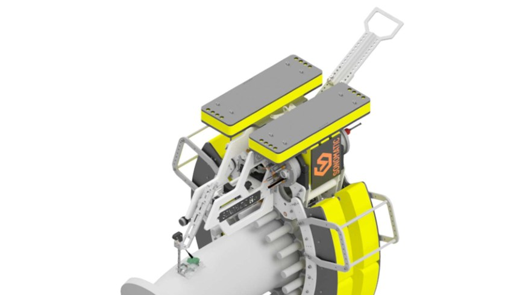
i-Claw / iClaw
Detects and sizes weld flaws with phased array and TOFD. ROV deployment with hydraulic clamping.
Installation: Subsea i-tube welds and associated flange / pipe geometry.
Manufacturer photo / illustration from Sonomatic brochure, page 1.Official product / service source ↗ · Image document ↗
NodeRay Scanner
Tracks complex node welds with an articulating head. Combines surface-crack and volumetric inspection.
Installation: Subsea T-, K- and Y-nodes, weld toes, caps and heat-affected zones.
Manufacturer photo / illustration from Sonomatic brochure, page 1.Official product / service source ↗ · Image document ↗
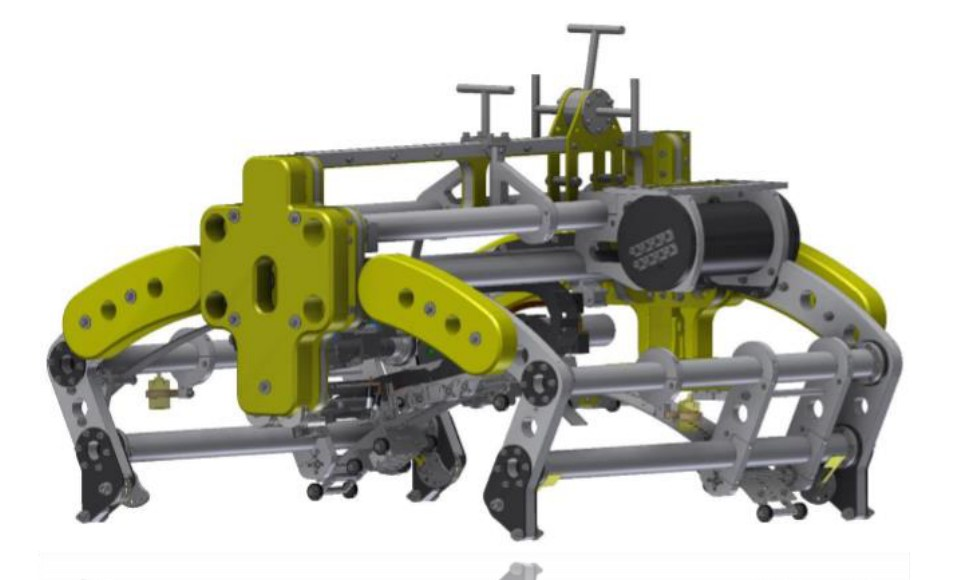
Access Window Scanner
Maps a target and follows weld features with motorised X, Y and rotating probe motion.
Installation: Subsea jacket access-window and closure welds.
Manufacturer photo / illustration from Sonomatic brochure, page 1.Official product / service source ↗ · Image document ↗
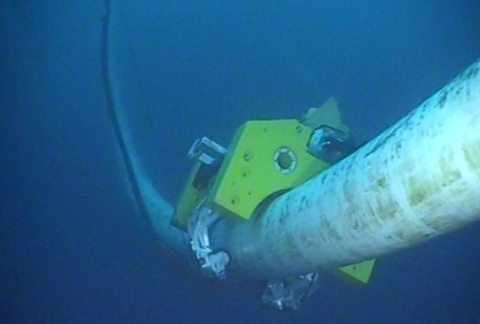
Flexible-riser systems
Explore flexible-riser systems.
Installation: Subsea pipes and structures.
Representative branch photo / illustration: MEC-Hug PipeCrawler. Manufacturer image from Sonomatic’s official website.Official product / service source ↗ · Image document ↗
MEC-Hug PipeCrawler
Electromagnetic scanning identifies armour-wire corrosion, cracking, gaps and misalignment.
Installation: Flexible risers and pipes, including splash-zone and subsea sections.
Manufacturer image from Sonomatic’s official website.Official product / service source ↗ · Image document ↗
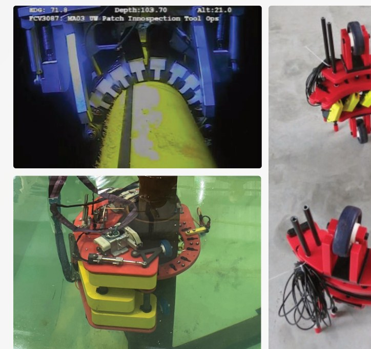
HFEC Scanner
High Field Eddy Current inspects the upper tensile-armour layer through thick outer sheaths.
Installation: Insulated flexible risers. Asset or ROV deployment.
Manufacturer photo / illustration from Sonomatic brochure, page 2.Official product / service source ↗ · Image document ↗
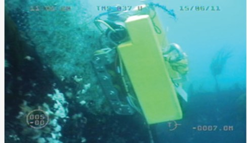
Additional subsea tools
Explore additional subsea tools.
Installation: Subsea pipes and structures.
Representative branch photo / illustration: MEC-Combi Crawler. Manufacturer photo / illustration from Sonomatic brochure, page 5.Official product / service source ↗ · Image document ↗
MEC-Combi Crawler
Carries MEC inspection tooling for subsea corrosion assessment. The brochure supplies family-level information only.
Installation: Subsea structures. Exact asset and configuration require confirmation.
Manufacturer photo / illustration from Sonomatic brochure, page 5.Official product / service source ↗ · Image document ↗
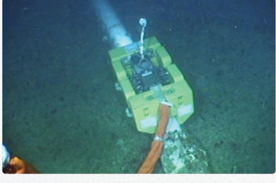
MEC-Combi PipeCrawler
Named pipe-oriented subsea MEC crawler in the capability brochure. Detailed model specifications are not published there.
Installation: Subsea pipe assets. Exact diameter and deployment limits are unspecified.
Manufacturer photo / illustration from Sonomatic brochure, page 5.Official product / service source ↗ · Image document ↗
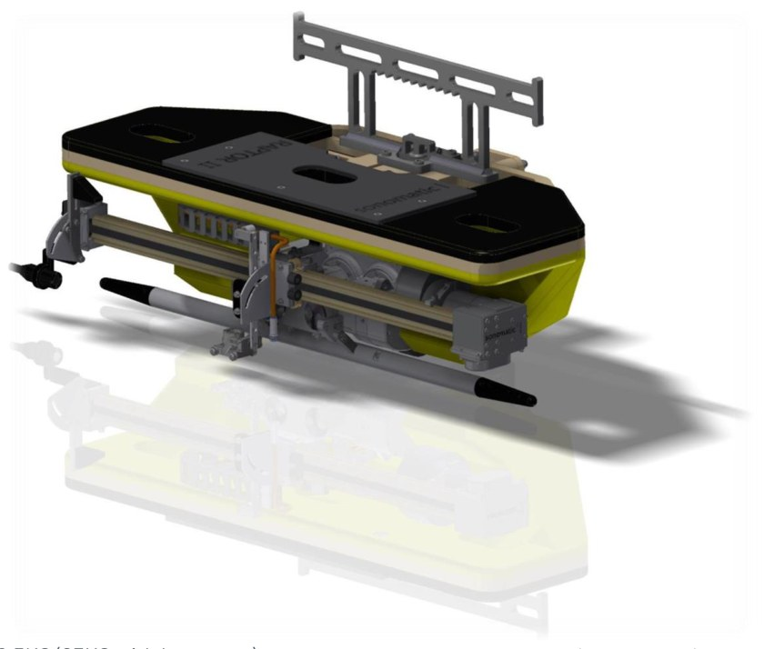
Raptor II Subsea
Magnetic crawler performs raster or line UT scans for corrosion and weld assessment.
Installation: Submerged caissons and steel surfaces. Linked sheet: 50 m depth rating.
Manufacturer photo / illustration from Sonomatic brochure, page 1.Official product / service source ↗ · Image document ↗
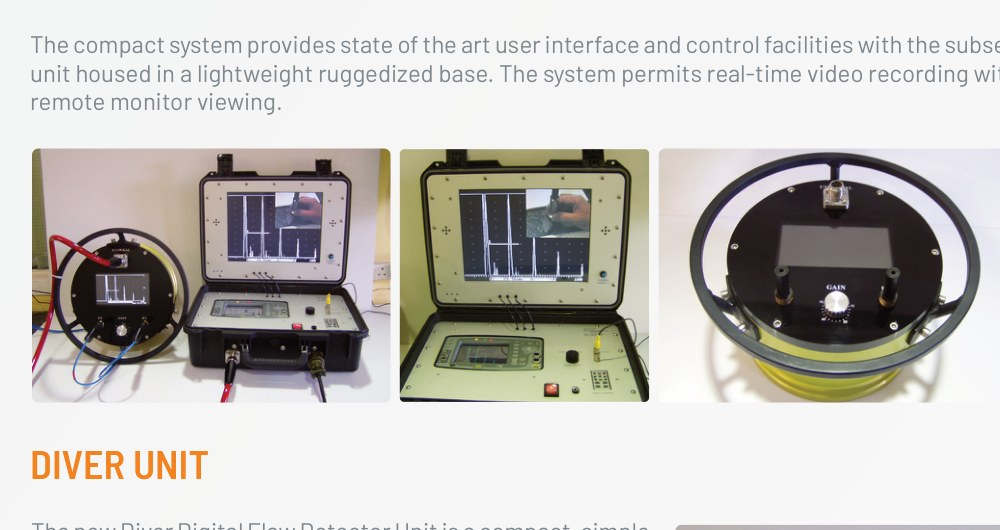
Subsea Manual UT System
Diver-operated digital flaw detector connects to a topside display and recording unit.
Installation: Accessible submerged components. The diver positions the probe.
Manufacturer photo / illustration from Sonomatic brochure, page 2.Official product / service source ↗ · Image document ↗
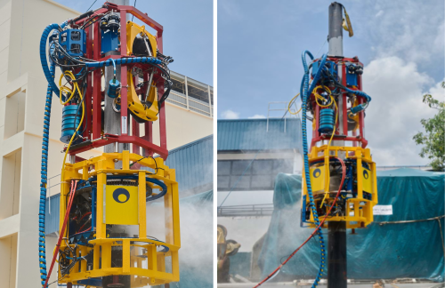
Splashzone Tooling Developments
Asset-deployed inspection and cleaning of vertical tubulars.
Installation: Splash zone and internal caisson surfaces.
Representative branch photo / illustration: MK2 Roto Climber. Manufacturer image from Sonomatic’s official website.Official product / service source ↗ · Image document ↗
Roto systems
Explore roto systems.
Installation: Splash zone and internal caisson surfaces.
Representative branch photo / illustration: Roto Climber Assessor (Mini). Manufacturer image from Sonomatic’s official website.Official product / service source ↗ · Image document ↗
Roto Climber Assessor (Mini)
Electric, battery-powered survey and inspection for small pipework and confined access.
Installation: Risers, caissons and conductors near the waterline.
Manufacturer image from Sonomatic’s official website.Official product / service source ↗ · Image document ↗
MK2 Roto Climber
Hydraulic platform for heavy cleaning, inspection and modular maintenance attachments.
Installation: Splash-zone tubulars; deeper-water work is also described.
Manufacturer image from Sonomatic’s official website.Official product / service source ↗ · Image document ↗
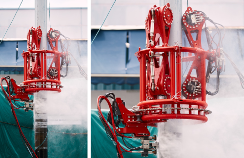
Roto Piler
High-pressure water jets remove marine growth.
Installation: Splash-zone risers, caissons and conductors.
Manufacturer image from Sonomatic’s official website.Official product / service source ↗ · Image document ↗
MEC-MPS family
Explore mec-mps family.
Installation: Splash zone and internal caisson surfaces.
Representative branch photo / illustration: MEC-MPS200+ MEC-MPS200. Manufacturer photo / illustration from Sonomatic brochure, page 2.Official product / service source ↗ · Image document ↗
MEC-MPS200+ MEC-MPS200
Screens internal and external defects from the outer surface. Optional UT and cleaning systems add measurement and marine-growth removal.
Installation: Risers, caissons, conductors and structures across the splash zone and subsea.
Manufacturer photo / illustration from Sonomatic brochure, page 2.Official product / service source ↗ · Image document ↗
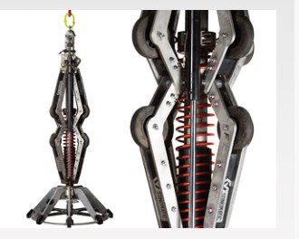
Internal caisson tools
Explore internal caisson tools.
Installation: Splash zone and internal caisson surfaces.
Representative branch photo / illustration: Internal Cleaning Tool ICT. Manufacturer photo / illustration from Sonomatic brochure, page 6.Official product / service source ↗ · Image document ↗
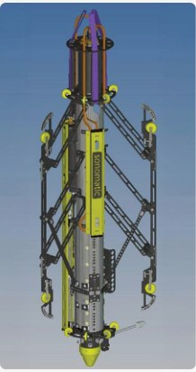
SPIRO SPIral-ROtation
Uses continuous spiral ultrasonic scanning to map remaining wall thickness, including on corroded internal surfaces.
Installation: Inside offshore risers, caissons and tubular structures, in air and water.
Manufacturer photo / illustration from Sonomatic brochure, page 2.Official product / service source ↗ · Image document ↗
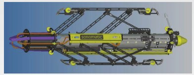
Internal Inspection Tool
The R&D brochure describes spiral UT inspection under this generic name. Its function overlaps the SPIRO description.
Installation: Internal surfaces of offshore risers, caissons and structures.
Manufacturer photo / illustration from Sonomatic brochure, page 5.Official product / service source ↗ · Image document ↗
Internal Cleaning Tool ICT
Removes internal scale and marine growth before inspection and returns debris to deck for disposal.
Installation: Caisson interiors, including sections below sea level.
Manufacturer photo / illustration from Sonomatic brochure, page 6.Official product / service source ↗ · Image document ↗
Topside Tooling Developments
Robotic and manual inspection of accessible plant surfaces.
Installation: Topside piping, vessels and storage tanks.
Representative branch photo / illustration: EDRIS. Manufacturer image from Sonomatic’s official website.Official product / service source ↗ · Image document ↗
Pressure-vessel robots
Explore pressure-vessel robots.
Installation: Topside piping, vessels and storage tanks.
Representative branch photo / illustration: Raptor II. Manufacturer image from Sonomatic’s official website.Official product / service source ↗ · Image document ↗
Raptor II
Rapid ultrasonic corrosion mapping over large external surfaces.
Installation: Topside pressure-vessel shells and storage-tank walls.
Manufacturer image from Sonomatic’s official website.Official product / service source ↗ · Image document ↗
EDRIS
End Dome Robotic Inspection System maps corrosion without entry into the skirt space.
Installation: Bottom domed heads of vertical pressure vessels.
Manufacturer image from Sonomatic’s official website.Official product / service source ↗ · Image document ↗
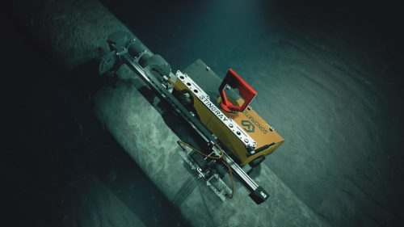
Additional platforms
Explore additional platforms.
Installation: Topside piping, vessels and storage tanks.
Representative branch photo / illustration: Stingray Scanner. Manufacturer image from Sonomatic’s official website.Official product / service source ↗ · Image document ↗
Stingray Scanner
Modular crawler for corrosion mapping and weld inspection with UT, DRS, TOFD and phased-array options.
Installation: Subsea and topside pipelines, vessels, caissons and complex structures, including splash zone.
Manufacturer image from Sonomatic’s official website.Official product / service source ↗ · Image document ↗
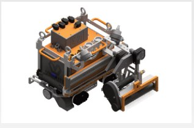
AxolRay RCI
Compact automated system for non-intrusive inspection, developed as a dedicated topside adaptation of Stingray principles.
Installation: Topside pipelines, pressure vessels, tanks and caissons.
Manufacturer photo / illustration from Sonomatic brochure, page 5.Official product / service source ↗ · Image document ↗
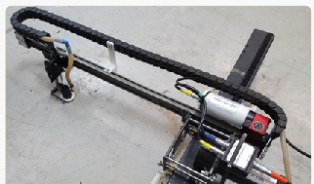
Fast XY Scanner
Listed in the topside equipment portfolio. The reviewed source does not explain its detailed inspection functions.
Installation: Topside. Specific component and deployment limits are not stated.
Manufacturer photo / illustration from Sonomatic brochure, page 3.Official product / service source ↗ · Image document ↗
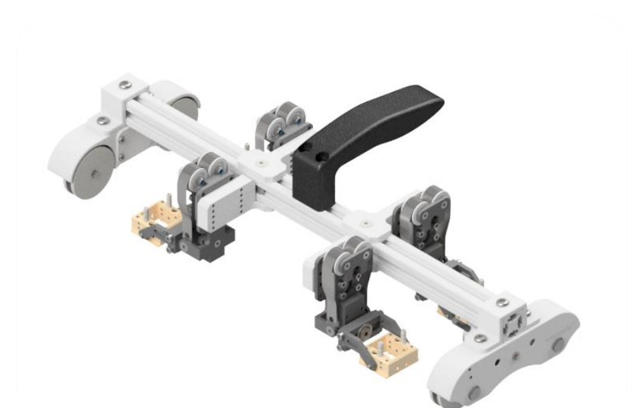
Manual & compact tools
Explore manual & compact tools.
Installation: Topside piping, vessels and storage tanks.
Representative branch photo / illustration: Man Scan II ManScan TOFD/PA. Manufacturer photo / illustration from Sonomatic brochure, page 1.Official product / service source ↗ · Image document ↗
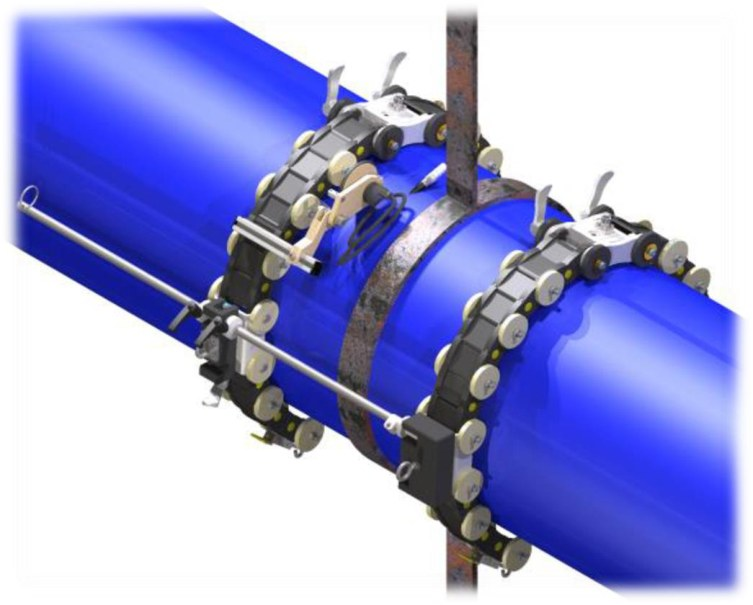
Belt Scanner CHIME Belt Scanner
Manually moves encoded EMAT, CHIME or Multiskip probes around a pipe.
Installation: Accessible topside pipework, including restricted-access screening locations.
Manufacturer photo / illustration from Sonomatic brochure, page 1.Official product / service source ↗ · Image document ↗
Man Scan II ManScan TOFD/PA
Manual encoded scanning for corrosion mapping and configurable weld-inspection techniques.
Installation: Topside and subsea steel pipework or flat surfaces.
Manufacturer photo / illustration from Sonomatic brochure, page 1.Official product / service source ↗ · Image document ↗
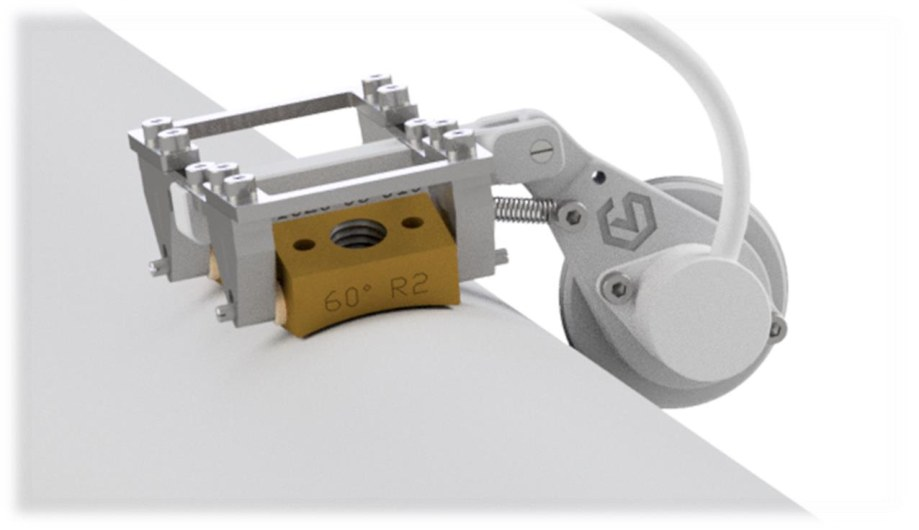
WRE H-Frame
Handheld encoded TOFD / B-scan / shear-wave tool for weld-root erosion, corrosion and weld assessment.
Installation: Topside pipe welds. Subsea configuration is available.
Manufacturer photo / illustration from Sonomatic brochure, page 1.Official product / service source ↗ · Image document ↗

MEC pipe & floor scanners
Explore mec pipe & floor scanners.
Installation: Topside piping, vessels and storage tanks.
Representative branch photo / illustration: MEC-P9. MEC pipescanner family figures from Sonomatic, page 2; shared family image, not a model-specific photograph.Official product / service source ↗ · Image document ↗
MEC-P9
Screens pipes for internal and external corrosion using four sensors. Typical wall-thickness range: up to 9 mm.
Installation: Topside pipelines / process piping, from 1 in diameter to flat.
MEC pipescanner family figures from Sonomatic, page 2; shared family image, not a model-specific photograph.Official product / service source ↗ · Image document ↗

MEC-P13
Four-sensor corrosion screening model. Typical wall-thickness range: up to 13 mm.
Installation: Topside piping, risers and vessel surfaces, from 4 in to flat.
MEC pipescanner family figures from Sonomatic, page 2; shared family image, not a model-specific photograph.Official product / service source ↗ · Image document ↗
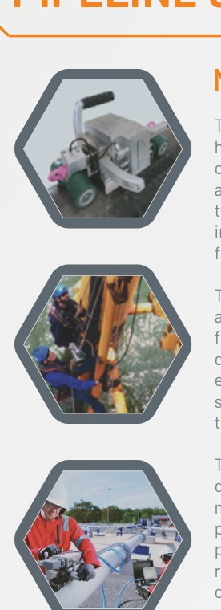
MEC-P19
Eight-sensor model for wider screening. Typical wall-thickness range: up to 31 mm.
Installation: Topside piping, risers and vessel surfaces, from 4 in to flat.
MEC pipescanner family figures from Sonomatic, page 2; shared family image, not a model-specific photograph.Official product / service source ↗ · Image document ↗
Inspection Technique
Inspection methods carried by scanners and robots.
Installation: Method-dependent inspection targets.
Representative branch photo / illustration: Subsea Manual UT System. Manufacturer photo / illustration from Sonomatic brochure, page 2.Official product / service source ↗ · Image document ↗
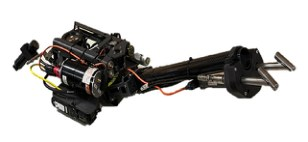
Custom inspection systems
Project-specific developments documented in application sheets and case studies.
Installation: Application-specific.
Representative branch photo / illustration: Fairlead inspection crawler. Manufacturer photo / illustration from Sonomatic brochure, page 1.Official product / service source ↗ · Image document ↗
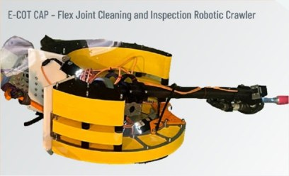
E-CAP multimission crawler
Cleans and captures a 360° 3D surface profile using water jets, brushing and Video Laser System photogrammetry.
Installation: FPSO riser flex-joint elastomer surface.
Manufacturer photo / illustration from Sonomatic brochure, page 1.Official product / service source ↗ · Image document ↗
Fairlead inspection crawler
Uses magnetic adhesion, water-jet cleaning and video-laser measurement of chain-link geometry.
Installation: Mooring chain links inside offshore fairleads.
Manufacturer photo / illustration from Sonomatic brochure, page 1.Official product / service source ↗ · Image document ↗
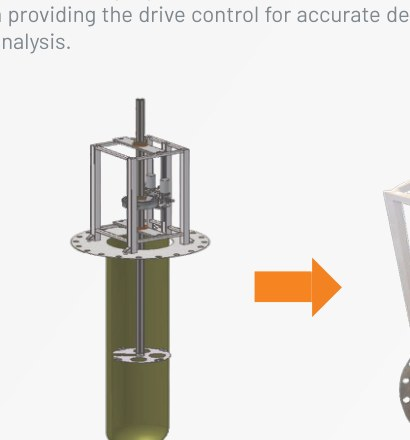
Vertical Can Pump Casing Scanner
Nautilus-based internal UT corrosion mapping and TOFD weld inspection after pump components are removed.
Installation: Vertical pump casing. The datasheet describes buried onshore installations.
Manufacturer photo / illustration from Sonomatic brochure, page 2.Official product / service source ↗ · Image document ↗
Equipment & Capabilities
The official library of equipment sheets, brochures and case studies.
Installation: Portfolio-wide.
Representative branch photo / illustration: NodeRay Scanner. Manufacturer photo / illustration from Sonomatic brochure, page 1.Official product / service source ↗ · Image document ↗